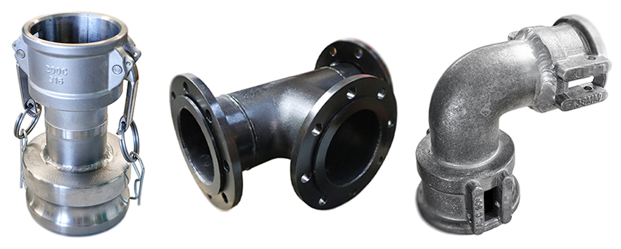
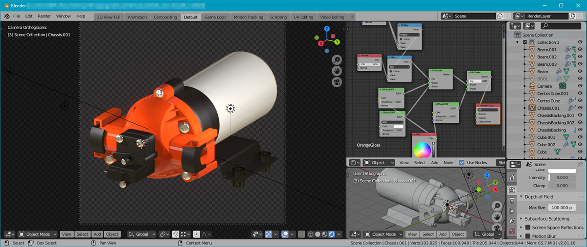
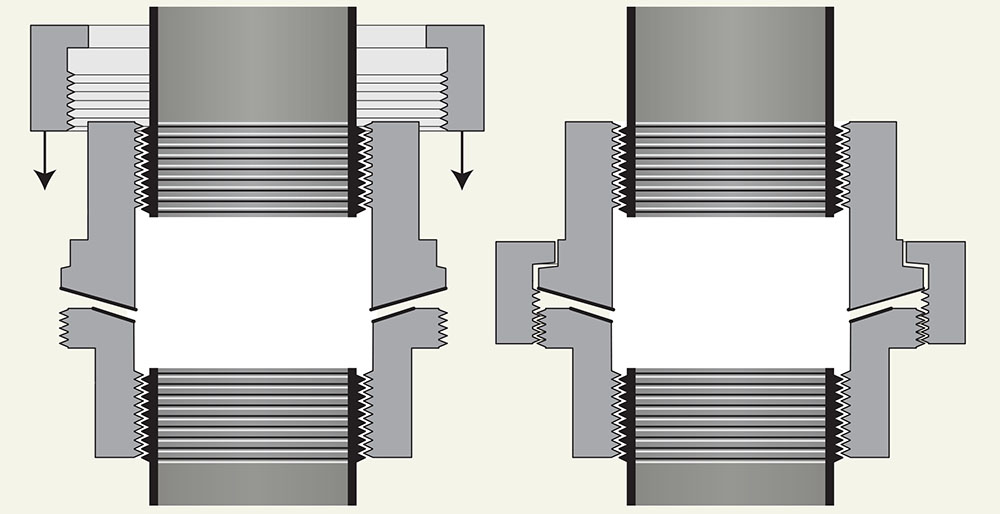
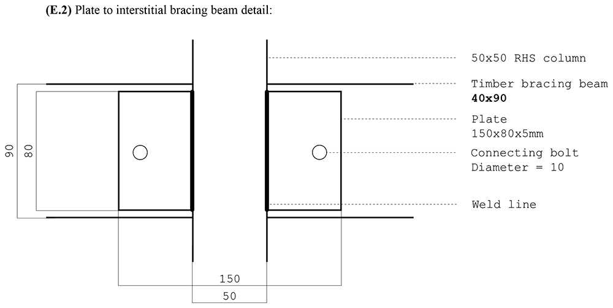
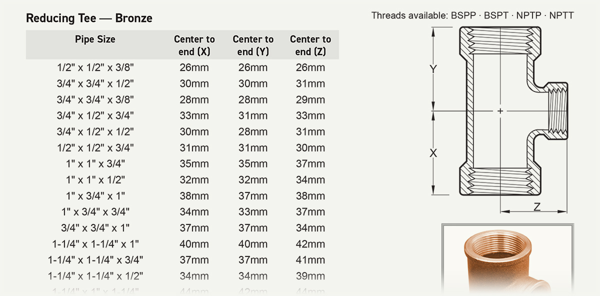

My Job
December 2020
I’m really lucky to have a job that I enjoy a lot, but a few people have asked me questions like “so… what do you actually do?”, and I realised that I haven’t done a very good job of talking about it! I thought I’d try and write a small summary of the sort of things I get to make and develop.
The place I work at is essentially in the business of manufacturing, supplying, and serivicing things that gets fluid from one place to another — hoses, fittings, pumps, filters, valves, and so on. It helps out people like van-dwellers who might want a tiny, portable pump installed, right up to charter boats that need certified fittings installed in a complex system to run their operations. My overall job is to make sure that all of those parts are well-documented, and that this information is clearly presented and widely available. (I also have to make the occasional tea and coffee…) Because I’m in a ‘data-formatting’ division of only one person, I end up juggling a couple of interesting things:

Photography. I photograph many of the new products that come in to the shop, as well as the special assemblies that are made in the welding shop. One of the key parts of this process is to make sure that the main characteristics of the components (like weld lines or screw-threads) are shown! I use a Canon M100 mirrorless camera – it is more handy than a DSLR for this sort of work because it has a FOV and depth-of-focus that favours smaller single subjects.

3D-modelling. There are instances where products can’t be photographed, or need to be shown in a deconstructed or axonometric manner. In these cases I can produce a three-dimensional model and render it, trying to make it look as convincing as possible! Blender’s Eevee rendering engine has become a very helpful tool in this pipeline because it renders in realtime, giving you instant feedback on the design decisions you are making.

Technical drawing. Now this is a fun one! I often get the opportuniy to draw up designs for new products or customised solutions that can be delivered to manufacturers. These are normally engineering drawings where a fabricator will come to me with a sketch or idea of what they want to convey; I just make sure that the design is codified in a tidy, computerised document! (The drawing above shows a special type of quick seal used to temporarily join two pipes.)

Architecture and fabrication. Sometimes I’ll prepare drawings for new additions to the our branch factories, too. This one was for a balustrade that we installed around a mezzanine floor. These can range from factory layouts to small steel assemblies!

Catalogues and spreadsheets. This is one of the more tedious jobs I have to do, but it can be really rewarding to see a catalogue or order sheet come together! More than just being about sticking data on a page, typesetting makes you think about who will be reading the document and what sort of font sizes, layouts, and configurations might suit them, so that they can use it to do their job without having to ‘decode’ it. I do all of this work in InDesign.
Many other things. I also get to do signage for our branch buildings, stickers for product codes, decals for cars, phone calls, standard orders, and all sorts! It’s enough to keep me on my toes every day that I come in, and that is something I am grateful for. Thank you for reading!